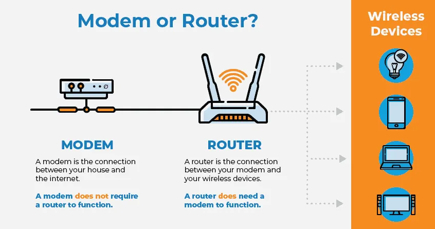
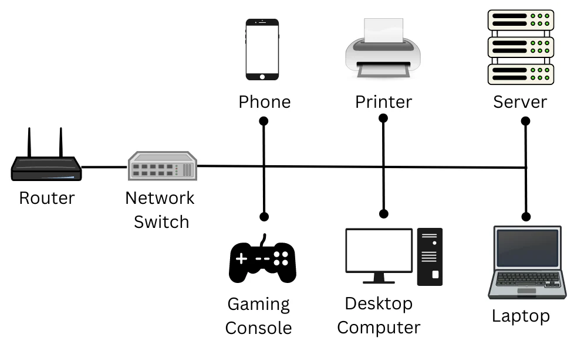

Lesson Overview
The Internet is a vast, interconnected system of networks that enables global communication, data sharing, and digital services. Understanding how the Internet works is critical to every cybersecurity professional, as nearly all attacks, defenses, and monitoring strategies depend on the flow of information across this global infrastructure.
In this lesson, you’ll explore what the Internet is, how it was developed, and what technologies, hardware, and protocols make it possible. You’ll also examine the relationship between IP addressing, Internet Service Providers (ISPs), and devices that form the foundation of digital communication.
Learning Objectives
- Define the Internet and describe its role as a decentralized global network.
- Understand the historical origins of the Internet and the development of ARPANET.
- Identify the major types of Internet services and access technologies.
- Recognize key hardware devices that support Internet connectivity.
- Explain the purpose of MAC and IP addresses and how they enable device communication.
- Understand the OSI Model and its importance in modern network troubleshooting and cybersecurity analysis.
Watch: What is the Internet?
What is the Internet?
The internet is a global network of interconnected devices and networks that allows people to access and share information, communicate with each other, and use a variety of online services and applications. It is a massive collection of computer networks that are connected together to form a single, decentralized, and constantly evolving entity. The internet was originally developed in the 1960s by the United States Department of Defense's Advanced Research Projects Agency (ARPA) as a way for researchers to share information and resources. This project, known as ARPANET, connected a small number of universities and government institutions and established the foundation for packet-switching — a method of breaking data into small packets for efficient transmission.
Since then, it has grown exponentially and has become an essential part of modern life, with billions of people accessing the internet daily. Everything from online banking and streaming to cloud storage and cybersecurity operations depend on its connectivity.
The internet uses a variety of technologies and protocols, such as Transmission Control Protocol/Internet Protocol (TCP/IP), to allow devices to communicate with each other. These protocols ensure that data is delivered reliably between devices, even across multiple networks owned by different providers. It supports a wide range of services, including email, instant messaging, online gaming, social media, video conferencing, and file sharing.

One of the key features of the internet is its open and decentralized nature. This means that no single organization “owns” the Internet. Instead, it relies on global cooperation between governments, businesses, and private entities to manage standards and maintain infrastructure. However, this openness also introduces challenges like privacy, security, and censorship, which are central issues in cybersecurity today.
Internet Service Types
There are several ways individuals and organizations can connect to the Internet. Each type of service has unique advantages and limitations depending on speed, cost, and geographical location.
- Dial-up / DSL: In the early days of the Internet, most homes used a dial-up connection. To get internet, the computer would “call” the Internet Service Provider (ISP) through a phone line. DSL (Digital Subscriber Line) improved on this by using higher frequency ranges, allowing simultaneous phone and Internet use.
- Cable: Instead of phone lines, cable Internet uses television coaxial cables to transmit data. Cable Internet generally offers faster speeds than DSL and remains a common residential option.
- Fiber Optic: Fiber networks use glass strands to transmit data as light instead of electricity. Because light is immune to electromagnetic interference, fiber connections provide high-speed, reliable access. Fiber optics are becoming the gold standard for modern Internet infrastructure.
- Satellite: By aligning a satellite dish to an orbital satellite, users can connect to the Internet from nearly anywhere. However, this connection has higher latency, making it slower for real-time activities like gaming or video conferencing.
- Cellular: Mobile phones and tablets connect to the Internet via cellular towers using radio waves. With 4G and 5G networks, cellular Internet has become fast enough to rival broadband in many areas.
Even if you have a computer with a working network interface, you don't automatically have access to the Internet. Just like a highway has on-ramps, the “Information Superhighway” uses Internet Service Providers (ISPs) as access points. An ISP acts as a gateway between your local network and the broader Internet.
Important Internet Hardware
To make Internet access possible, several hardware components work together:
- Modem: Converts digital signals from a computer into analog signals for transmission over telephone or cable lines.
- Router: Directs data packets between networks, allowing multiple devices to share one Internet connection.
- Switch: Connects multiple devices within a LAN and forwards data to the correct destination device.
- Network Interface Card (NIC): Provides a physical interface between a computer and a network. Each NIC has a unique MAC address.
- Wireless Access Point (WAP): Extends wired networks to support wireless devices like laptops and smartphones.
- Home Router: Common in small or home networks, combining the features of routers, switches, and WAPs into one unit.


Network Addressing
For a computer to send or receive information on a network, it must have a unique network address — similar to how a house has a mailing address. Network addresses ensure that data reaches the correct destination without confusion.
| Type | Description |
|---|---|
| Physical Address | Also known as a MAC address, this is a unique identifier assigned to a device’s network interface. It’s embedded in the hardware and written in hexadecimal format (e.g., 00-09-5B-36-C2-93). |
| Logical Address | Assigned via software (typically using IP). Logical addresses consist of a network segment and a host identifier. These addresses can change and are managed through protocols such as DHCP. |
IP Addresses
IP addresses are numeric identifiers assigned to devices to facilitate communication across networks. IPv4 uses 32 bits (e.g., 192.168.1.1), while IPv6 uses 128 bits (e.g., 2001:0db8:85a3::7334) to support more devices globally.
- Public IP: Globally unique and visible on the Internet.
- Private IP: Used internally within local networks.
- Static IP: Fixed and manually assigned.
- Dynamic IP: Automatically assigned via DHCP and changes periodically.
The OSI Model
The Open Systems Interconnection (OSI) Model is a framework that standardizes network communication into seven layers: Physical, Data Link, Network, Transport, Session, Presentation, and Application. While modern Internet communication follows the simpler TCP/IP model, OSI remains essential for understanding how data travels from one device to another and for diagnosing network problems.
In cybersecurity, understanding which OSI layer an attack targets — whether it’s a DDoS flood at Layer 3 (Network) or a web application exploit at Layer 7 (Application) — helps professionals build effective defensive strategies.